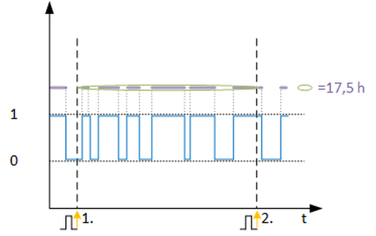

[CNT_ONTI] 按时计数
功能块 CNT_ONTI 计算特定时间段内二进制信号的接通时间。
CNT_ONTI 计算特定时间段内二进制信号的接通时间。
Enable and disable the function
如果启用该功能 (EnFnct = 1)，则会记录输入 [In] 处信号的接通时间。
接通时间以小时为单位计算。
Calculation
当前时间段内信号的当前开启时间显示在 [PrVal] 上。该时间段到期后，信号的当前接通时间将保存为最近时间段的接通时间 [RctVal]，并通过脉冲设置为零。在 CNT_ONTI 外部生成的时间周期由输入 [Imp] 上的上升斜率确定。
Reset
当前和最近的接通时间通过输入 [复位] 上的上升斜率立即设置为零。
输入 | 描述 | 数据类型 | 默认值 |
|---|---|---|---|
EnFnct | Enable function 启用该功能。 | 布尔值 | 1 |
0 - 该功能被禁用。 | |||
In | Input 输入信号 | 布尔值 | 0 |
0 - 关闭 | |||
Imp | Impulse 确定评估时间周期的脉冲输入。上升沿表示新周期的开始。 | 布尔值 | 0 |
0 - 否 | |||
Reset | Reset 所有时间均重置为零。 | 布尔值 | 0 |
0 - 否 | |||
Pers | Persistent | 布尔值 | 0 |
0 - No | |||
|
BaObjRef | BA-Object reference | 结构 | --- |
BaObjRef | Device identifier | 双字 | 16#3FFFFF |
BaObjRef | Object identifier | 双字 | 16#3FFFFF |
BaObjRef | Item identifier | 整数 | -1 |
输出 | 描述 | 数据类型 | 默认值 |
|---|---|---|---|
PrVal | Present value 以小时为单位的现值 | 真实的 | 0.0 |
RctVal | Recent value 最近的小时值 | 真实的 | 0.0 |
Dstb | Disturbed [Dstb] 指示是否访问了引用的 BACnet 对象。 | 布尔值 | 0 |
ErrCode | Error code indication | 整数 | 0: No error |
= 0 - No error | |||
CNT_ONTI 用于确定组件或函数的 On-time（运行时）。通过显示特定时间段内当前和最近的接通时间，可以更早、更快地识别错误。这可以延长受监控组件的使用寿命和维护间隔时间，并减少能耗。
以下示例基于评估期 = 1 天：
